핑크 리본 아기고양이 기사가 붉은 용을 타고 구름 위를 날다 급강하·추락하지만, 기절한 용을 걱정해 들여다보자 용이 눈을 뜨고 연기 하트를 내뿜는 36초 시네마틱 쇼츠(대부분 가로 영상을 90도 돌려 세로를 채움).
| 화면 비율/해상도 | 9:16 · 1080x1920 · 30fps |
|---|---|
| 화면 방향 트릭 | 핵심 트릭: 1번 샷(0~6.53s)만 세로 네이티브이고, 2~8번 샷(6.53~36.57s, 전체의 82%)은 16:9 가로(1920x1080)로 생성한 영상을 시계방향 90도 회전(transpose=1)해 1080x1920에 크롭 없이 딱 맞춤. 그래서 하늘은 항상 화면 오른쪽, 땅은 왼쪽. 장점: 날개폭·용 전신 같은 가로 구도를 잘라내지 않고 세로 화면을 꽉 채움 + 시청자가 폰을 옆으로 돌리게 만드는 패턴 인터럽트/댓글 유발('목 꺾임' 반응). 또 5프레임마다 중복 프레임 → 24fps 타임라인을 30fps로 내보낸 흔적(16.57s에서 위상 1프레임 이동). |
| 워터마크 | 화면 내 워터마크/로고 없음(전 프레임 확인). 캡션에서 가이드 제공. |
| 화면 문구/자막 | 없음 (자막·문구 전혀 없음). 캡션: '🐱⚔🐉 pt.3 / Comment "guide" for the prompts.' |
| 원본 캡션 | 🐱⚔🐉 pt.3 Comment "guide" for the prompts. |
0초부터 '갑옷 입은 핑크 리본 아기고양이가 용을 타고 있다'는 비현실적 귀여움+스케일 대비가 한 프레임에 전달됨. 1~2s 고양이가 고개를 들어 렌즈와 눈을 맞추는 순간(아이컨택)이 스크롤을 멈추게 하고, 2.3s부터 난기류 흔들림으로 즉시 긴장감 추가.
| Setup 0.00-6.53s | 아기고양이 기사가 용 목 위 안장에 앉아 비행, 카메라와 눈맞춤. 난기류로 살짝 긴장. |
|---|---|
| Escalation 6.53-16.57s | 측면·체이스·어깨너머 3앵글로 비행의 스케일을 보여주고, 끝에서 급강하 시작. |
| Climax 16.57-23.00s | 배럴롤 급강하 → 초원에 충돌, 고양이가 튕겨나감. |
| Escalation 23.00-29.20s | 감정적 긴장: 고양이가 일어나 기절한 용에게 다가가 걱정스럽게 들여다봄('용 괜찮아?' 질문 발생). |
| Payoff 29.20-36.57s | 용이 눈을 뜨고 고양이를 바라본 뒤 안심하며 연기 하트를 내뿜음 → '둘은 서로 아낀다'. |
캡션의 'Comment "guide" for the prompts' = 댓글 키워드 자동 DM 퍼널. 여기에 90도 회전 화면이 '폰 돌려서 봤다' 류 댓글을, 용 기절 장면이 '용 괜찮아?' 댓글을 추가로 유발.
완전 루프 아님(첫 프레임 하늘 위 비행, 마지막 프레임 지상 클로즈업). 대신 하트가 사라지는 조용한 엔딩이 짧아 재시청 유도, 시리즈(pt.1~3) 연결로 프로필 방문 유도.
| 90-degree rotated footage (sideways frame) | 가로 영상 90도 회전해 세로 채우기 @ 6.53-36.57s |
|---|---|
| Hard cut | 즉시 컷 @ 6.53, 9.33, 12.70, 16.57, 21.57, 26.57, 29.20s |
| Cut on action | 동작 중 컷(다이브 시작 순간) @ 16.57s |
| Punch-in (axial cut-in) | 같은 축으로 더 가까이 들어가는 컷 @ 26.57s, 29.20s |
| Reveal | 구름이 걷히며 풍경 공개 / 눈 뜨는 리빌 @ 13.0s, 30.9s |
| Camera roll / Dutch tilt | 카메라 회전 기울기 @ 2.3-5.8s, 17.5-20.5s |
| Motion blur | 모션 블러 @ 3.0-4.5s, 19-22s |
| Over-the-shoulder POV | 어깨너머 1인칭 시점 @ 12.70-16.57s |
| Tonal shift / sound drop | 소리 급감으로 분위기 전환 @ 23.0s |
| 3:2 pulldown-style frame duplication (24→30fps) | 24fps 편집본을 30fps로 출력(5프레임마다 중복) @ 전체 |
[character_sheet_en] a tiny 7-week-old fluffy kitten with long soft cream-beige fur and faint light-brown tabby stripes on the forehead, round head, small rounded ears, huge round glossy dark blue-grey eyes, small pink nose, white whiskers, a small pink satin bow clipped on its left ear, wearing miniature polished silver full-plate knight armor with engraved floral filigree on the rounded pauldrons and breastplate, chainmail skirt underneath, brown leather belt with brass buckle, a tiny longsword with brass crossguard in a dark leather scabbard on the left hip, an ivory-white linen cape tied at the neck, holding thin dark leather reins in its front paws. Proportions: real kitten anatomy, sits and walks on four legs, head large relative to body, armor sized exactly to the kitten. Rides a colossal crimson-red western dragon with glossy wet-looking pebbled scales, a ridge of pale rose-red dorsal spikes, two forward-curving blood-red horns plus two long swept-back charcoal-black horns, amber-gold slit-pupil eyes, huge bat-like red wings with thin translucent glittering membranes, a dark leather riding harness with silver buckles, a dark leather saddle at the base of the neck and thin dark leather reins running to the snout. [wardrobe_props_en] Polished silver miniature plate armor with engraved floral filigree (pauldrons, breastplate, vambraces, greaves), chainmail skirt, brown leather belt with brass buckle, tiny longsword with brass crossguard in dark leather scabbard on left hip, ivory-white linen cape, pink satin bow on the left ear, thin dark leather reins. Dragon: dark leather saddle with silver buckles at the base of the neck, harness straps around the chest, rein chain to the snout. [environment_en] High-altitude overcast cloudscape (blue-grey cumulus, then bright white cloud sea), Irish/Scottish-style highlands with patchwork green farm fields and stone walls below, mossy green mountain ridges, a tall-grass meadow at the foot of a rocky hillside for the crash landing, drifting mist and brown dust. [lighting_en] Soft diffused overcast daylight, no hard shadows, gentle top light with bright hazy sky as a large soft source; specular glints on wet-looking dragon scales and polished armor; slightly warmer light in the final close-ups. [color_grade_en] Muted cool teal-grey skies (sky luma ~100-160, low saturation 27-55) against saturated crimson dragon; creamy beige kitten; final close-up warmer and richer (saturation ~83) with amber eye accent; slight film grain, soft contrast, no crushed blacks. [camera_lens_en] Shot 1 50mm f/2 neck-mounted rider cam; aerial 24-35mm wide chase/side cams; 28mm OTS POV; ground 35-50mm; final 85mm macro-like ECU. Mix of locked mounts and aggressive rolling chase during turbulence and dive. All shots except shot 1 generated 16:9 and rotated 90 degrees clockwise. [realism_style_en] Photorealistic live-action fantasy film look (Game-of-Thrones-like dragon realism) with a real-looking kitten; fur strand detail, wet glossy scales, practical dust; no cartoon stylization. [negative_prompt_en] cartoon, 3d render look, plastic fur, anthropomorphic human body, standing on two legs like a human, extra limbs, extra tails, deformed paws, human hands, missing bow, bow on wrong ear, gold armor, black armor, blue dragon, green dragon, feathered wings, multiple kittens, multiple dragons, text, subtitles, watermark, logo, frame border, oversaturated, blurry face, warped horns
프레임 위 노란 3분할 선은 오른쪽 아래 버튼으로 켜고 끌 수 있어요. 각 프롬프트는 [복사] 버튼으로 바로 복사.
| 카메라 움직임 | 용 목에 달린 '넥 캠'처럼 라이더를 정면에서 바라보는 고정 마운트 + 아주 느린 푸시인. 2.3~5.8s 용이 기체를 기울이며 난기류: 카메라 롤 약 ±15도, 좌우 흔들림, 강한 모션블러(3.0s, 4.0s 프레임 흐림). 5.8s 이후 안정. |
|---|---|
| 화면 구성(구도) | 원본 세로(9:16 네이티브, 회전 없음). 고양이 머리 중심 x50% y38%, 머리~발 높이 프레임의 약 55%(머리 위 y20% ~ 발 y78%), 헤드룸 약 20%. 하단 25%는 용 목의 비늘 능선이 삼각형으로 수렴(리딩 라인). 하늘(흐린 청회색 구름)이 상단 65%. 흰 망토가 화면 왼쪽으로 펄럭임. 중앙 구도(3분할 아님)로 '눈맞춤' 강조. |
| 동물 행동/연기 | 0~1s 고양이가 고개를 숙여 아래를 내려다봄 → 1~2s 고개를 들어 렌즈를 정면으로 봄 → 2.3~4.5s 용이 급선회, 고양이가 좌우로 휘청이며 고삐를 꽉 잡음, 3.4s 오른쪽에 붉은 날개 끝이 스침 → 5~6.5s 다시 중심 잡고 커다란 눈으로 카메라 응시, 흰 망토가 바람에 휘날림. |
| 배경 | 흐린 청회색 적운 하늘(구름 사이 고공), 전경 하단 붉은 용 비늘 목 능선과 검은 가죽 고삐, 좌우 가장자리에 붉은 날개 막 일부. |
| 화면 문구/자막 | 없음 |
| 다음 컷 전환 | Hard cut — 6.53s 하드컷(픽셀차 104 스파이크, 1프레임). 세로 네이티브 → 90도 회전된 가로 영상으로 전환되는 첫 순간 = 시청자에게 '화면이 옆으로 누웠다'는 패턴 인터럽트. |
| BGM 상태 | 잔잔한 시네마틱 앰비언트 패드 + 바람(추정). 2.5~3.3s 음량 -11dB 급상승(난기류 휘잉/용 포효 추정). |
Vertical 9:16 photorealistic film still. a tiny 7-week-old fluffy kitten with long soft cream-beige fur and faint light-brown tabby stripes on the forehead, round head, small rounded ears, huge round glossy dark blue-grey eyes, small pink nose, white whiskers, a small pink satin bow clipped on its left ear, wearing miniature polished silver full-plate knight armor with engraved floral filigree on the rounded pauldrons and breastplate, chainmail skirt underneath, brown leather belt with brass buckle, a tiny longsword with brass crossguard in a dark leather scabbard on the left hip, an ivory-white linen cape tied at the neck, holding thin dark leather reins in its front paws. The kitten sits upright in a dark leather saddle on the neck of a colossal crimson-red western dragon with glossy wet-looking pebbled scales, a ridge of pale rose-red dorsal spikes, two forward-curving blood-red horns plus two long swept-back charcoal-black horns, amber-gold slit-pupil eyes, huge bat-like red wings with thin translucent glittering membranes, a dark leather riding harness with silver buckles, a dark leather saddle at the base of the neck and thin dark leather reins running to the snout, flying high above the clouds. Camera is mounted on the dragon's neck facing back toward the rider: the kitten is centered (head at 50% x, 38% y), its body fills about 55% of the frame height, looking straight into the lens with big curious eyes. The bottom 25% of the frame is the dragon's scaly neck ridge converging toward the kitten like a triangle, dark leather reins crossing diagonally. The ivory cape flutters to the left in strong wind. Background: overcast blue-grey cumulus sky, soft and out of focus, edge of a red wing membrane at the right edge. 50mm lens, f/2, shallow depth of field. photorealistic cinematic live-action fantasy film still, practical-creature realism, real fur strand detail, subtle film grain, soft diffused overcast daylight, muted cool teal-grey sky with crimson dragon as the dominant color, high dynamic range, no text, no watermark
Same framing as the start frame, kitten centered looking directly at the camera, cape blown to the left, calm flight, overcast sky.
Neck-mounted camera facing the kitten knight rider. 0-2s: the kitten looks down, then slowly lifts its head and stares into the lens. 2-4.5s: the dragon banks hard; the camera rolls about 15 degrees left and right, the kitten sways and grips the reins, strong motion blur, a red wing tip sweeps past the right edge. 4.5-6.5s: the flight stabilizes, the kitten recenters and gazes into the camera, cape and fur rippling in the wind. Keep the pink bow on the left ear, silver armor design, fur color and eye size identical in every frame; the kitten stays seated, no human-like standing, no talking.
cartoon, 3d render look, plastic fur, anthropomorphic human body, standing on two legs like a human, extra limbs, extra tails, deformed paws, human hands, missing bow, bow on wrong ear, gold armor, black armor, blue dragon, green dragon, feathered wings, multiple kittens, multiple dragons, text, subtitles, watermark, logo, frame border, oversaturated, blurry face, warped horns
9:16 네이티브, 1080x1920, image2video, 10s 생성 → 0~6.53s 사용(원본이 5s 초과라 10s 생성 트림으로 추정). 시드 고정, 캐릭터 시트 이미지를 레퍼런스로. 24fps로 생성/편집 후 30fps 출력(원본에 5프레임마다 중복프레임 = 24→30 풀다운 흔적).
concat (no xfade); s01 trim=0:6.53
clip s01 0.00-6.53, next clip starts at 6.53 with no transition
Vertical 9:16 photorealistic film still. a tiny baby golden Syrian hamster with fluffy golden-orange and cream fur, white chest and cheeks, chubby round cheek pouches, tiny rounded pink-edged ears, huge glossy black bead eyes, pink nose, tiny pink paws, a small pink satin bow clipped on its left ear, wearing miniature polished silver full-plate knight armor with engraved floral filigree on the rounded pauldrons and breastplate, chainmail skirt underneath, brown leather belt with brass buckle, a tiny longsword with brass crossguard in a dark leather scabbard on the left hip, an ivory-white linen cape tied at the neck, holding thin dark leather reins in its tiny pink front paws. The hamster sits upright in a dark leather saddle on the neck of a colossal crimson-red western dragon with glossy wet-looking pebbled scales, a ridge of pale rose-red dorsal spikes, two forward-curving blood-red horns plus two long swept-back charcoal-black horns, amber-gold slit-pupil eyes, huge bat-like red wings with thin translucent glittering membranes, a dark leather riding harness with silver buckles, a dark leather saddle at the base of the neck and thin dark leather reins running to the snout, flying above the clouds. Camera mounted on the dragon's neck facing the rider: hamster centered (head at 50% x, 40% y), body fills about 50% of frame height, staring into the lens with glossy black eyes, cheeks puffed. Bottom 25% is the scaly neck ridge converging like a triangle, reins diagonal. Ivory cape flutters left. Overcast blue-grey sky, shallow DOF, 50mm f/2. photorealistic cinematic live-action fantasy film still, practical-creature realism, real fur strand detail, subtle film grain, soft diffused overcast daylight, muted cool teal-grey sky with crimson dragon as the dominant color, high dynamic range, no text, no watermark
Neck-mounted camera facing the hamster knight. 0-2s the hamster looks down then lifts its head and stares into the lens, whiskers twitching. 2-4.5s the dragon banks hard, camera rolls about 15 degrees, the hamster wobbles and clutches the reins, motion blur, red wing tip sweeps past right edge. 4.5-6.5s flight stabilizes, hamster recenters and gazes into camera, fur rippling. Keep bow on left ear, armor and fur colors identical; hamster stays seated.
햄스터는 몸이 짧고 둥글어 갑옷을 '둥근 흉갑+짧은 다리 가드'로. 볼주머니가 눈맞춤 귀여움을 대신함. 고양이보다 작게 보이도록 용 비늘을 더 크게.
| 카메라 움직임 | 용과 나란히 비행하는 사이드 트래킹, 거의 고정(흐름 0.7px/f). 미세한 상하 부유감. |
|---|---|
| 화면 구성(구도) | 90도 시계방향 회전 샷. 최종 세로화면: 용의 목이 화면 위(y0%)에서 아래(y100%)로 세로로 관통, 머리와 뿔은 하단 y75~95% x25~60%. 고양이는 x70% y35%, 높이 약 12%(작게). 하늘(흰 구름)이 오른쪽 40%. 원본 가로 기준: 용이 오른쪽으로 비행, 머리 x85% y60%, 고양이 x35% y30%, 하늘 위쪽. |
| 동물 행동/연기 | 용이 오른쪽(원본 기준)으로 활공, 목이 천천히 S자로 움직임. 고양이가 안장 위에서 앞을 바라보고, 흰 망토가 뒤로 날림. 용의 붉은 날개 한쪽이 고양이 뒤에서 퍼덕임. |
| 배경 | 밝은 흰 구름층/안개 하늘, 지면 없음. |
| 화면 문구/자막 | 없음 |
| 다음 컷 전환 | Hard cut — 9.33s 하드컷(픽셀차 98.5). 옆모습 → 뒤에서 쫓는 체이스캠으로 방향 전환. |
| BGM 상태 | 6.4~7.5s 음량 -12~-16dB, 0.28s 간격 규칙적 타격(6.78/7.06/7.34/7.62) = 날갯짓 또는 BGM 8분음표 퍼커션(추정). |
16:9 landscape photorealistic film still, side view from slightly below. a colossal crimson-red western dragon with glossy wet-looking pebbled scales, a ridge of pale rose-red dorsal spikes, two forward-curving blood-red horns plus two long swept-back charcoal-black horns, amber-gold slit-pupil eyes, huge bat-like red wings with thin translucent glittering membranes, a dark leather riding harness with silver buckles, a dark leather saddle at the base of the neck and thin dark leather reins running to the snout glides to the right through a bright white cloud layer, its long neck stretched horizontally across the frame, head with horns at 85% x, 60% y. On the saddle at the base of the neck (35% x, 30% y) rides a tiny 7-week-old fluffy kitten with long soft cream-beige fur and faint light-brown tabby stripes on the forehead, round head, small rounded ears, huge round glossy dark blue-grey eyes, small pink nose, white whiskers, a small pink satin bow clipped on its left ear, wearing miniature polished silver full-plate knight armor with engraved floral filigree on the rounded pauldrons and breastplate, chainmail skirt underneath, brown leather belt with brass buckle, a tiny longsword with brass crossguard in a dark leather scabbard on the left hip, an ivory-white linen cape tied at the neck, holding thin dark leather reins in its front paws, small in frame (about 12% of frame height), looking forward, cape streaming backward. One red wing rises behind the rider. Bright hazy white sky, no ground. 35mm lens, deep focus. photorealistic cinematic live-action fantasy film still, practical-creature realism, real fur strand detail, subtle film grain, soft diffused overcast daylight, muted cool teal-grey sky with crimson dragon as the dominant color, high dynamic range, no text, no watermark. Generate as 16:9 landscape 1920x1080; the editor rotates it 90 degrees clockwise to fill 9:16 (sky ends up on the right side of the phone screen, ground on the left).
Side tracking shot flying parallel to the dragon at the same speed. The dragon glides right with a slow S-curve of the neck and one slow wing beat; the kitten rider sways gently in the saddle, cape streaming. Camera nearly locked, tiny vertical float. Do not change the dragon's color, horns or the kitten's bow and armor. Generate as 16:9 landscape 1920x1080; the editor rotates it 90 degrees clockwise to fill 9:16 (sky ends up on the right side of the phone screen, ground on the left).
cartoon, 3d render look, plastic fur, anthropomorphic human body, standing on two legs like a human, extra limbs, extra tails, deformed paws, human hands, missing bow, bow on wrong ear, gold armor, black armor, blue dragon, green dragon, feathered wings, multiple kittens, multiple dragons, text, subtitles, watermark, logo, frame border, oversaturated, blurry face, warped horns
16:9 1920x1080 image2video 5s 생성 → 2.80s만 사용. 편집에서 transpose=1(시계방향 90도). 세로로 만들면 이 느낌이 안 나옴(반드시 가로 생성 후 회전).
concat; s02 trim=0:2.80, transpose=1
clip s02 6.53-9.33, CSS rotate(90deg) on a 1920x1080 video inside 1080x1920 stage
16:9 landscape photorealistic film still, side view from slightly below. a colossal crimson-red western dragon with glossy wet-looking pebbled scales, a ridge of pale rose-red dorsal spikes, two forward-curving blood-red horns plus two long swept-back charcoal-black horns, amber-gold slit-pupil eyes, huge bat-like red wings with thin translucent glittering membranes, a dark leather riding harness with silver buckles, a dark leather saddle at the base of the neck and thin dark leather reins running to the snout glides right through bright white clouds, neck horizontal, head at 85% x 60% y. On the saddle (35% x, 30% y) rides a tiny baby golden Syrian hamster with fluffy golden-orange and cream fur, white chest and cheeks, chubby round cheek pouches, tiny rounded pink-edged ears, huge glossy black bead eyes, pink nose, tiny pink paws, a small pink satin bow clipped on its left ear, wearing miniature polished silver full-plate knight armor with engraved floral filigree on the rounded pauldrons and breastplate, chainmail skirt underneath, brown leather belt with brass buckle, a tiny longsword with brass crossguard in a dark leather scabbard on the left hip, an ivory-white linen cape tied at the neck, holding thin dark leather reins in its tiny pink front paws, very small (10% of frame height), cape streaming back. photorealistic cinematic live-action fantasy film still, practical-creature realism, real fur strand detail, subtle film grain, soft diffused overcast daylight, muted cool teal-grey sky with crimson dragon as the dominant color, high dynamic range, no text, no watermark. Generate as 16:9 landscape 1920x1080; the editor rotates it 90 degrees clockwise to fill 9:16 (sky ends up on the right side of the phone screen, ground on the left).
Side tracking shot parallel to the dragon; slow neck S-curve and one wing beat; the tiny hamster rider bobs in the saddle, cape streaming. Camera nearly locked. Generate as 16:9 landscape 1920x1080; the editor rotates it 90 degrees clockwise to fill 9:16 (sky ends up on the right side of the phone screen, ground on the left).
라이더가 매우 작게 보여 햄스터 실루엣(둥근 몸+흰 망토)만 읽히면 됨. 망토 색을 흰색으로 유지해야 작은 크기에서도 식별 가능.
| 카메라 움직임 | 용 꼬리 뒤에서 일정 거리로 따라가는 체이스캠(드론 팔로우). 11~12s 구름이 걷히며 아래 초록 산이 드러남. 날개 1회 하강 스트로크. |
|---|---|
| 화면 구성(구도) | 90도 회전. 최종 세로화면: 용 몸통이 왼쪽 가장자리(x0%)에서 중앙 x60%까지 가로로, 날개가 화면 위아래 전체(y0~100%)를 대각으로 채움 → 세로화면을 날개폭으로 꽉 채우는 핵심 트릭. 고양이+붉은 뿔은 x75% y52%. 원본 가로: 용이 화면 중앙 아래에서 위로 멀어지며 비행, 날개가 좌우 끝까지, 라이더 머리 x52% y25%. |
| 동물 행동/연기 | 용이 카메라에서 멀어지는 방향으로 비행, 날개 전개 상태에서 한 번 크게 내려침. 뒷다리/발톱이 몸통 아래로 접혀 보임. 라이더는 뒷모습으로 작게. |
| 배경 | 두꺼운 흰 구름 바다, 12s에 구름 사이로 이끼 낀 초록 산 능선이 아래(최종화면 왼쪽)에 보임. |
| 화면 문구/자막 | 없음 |
| 다음 컷 전환 | Hard cut — 12.70s 하드컷(픽셀차 63, 음량 -11dB 온셋 12.7s와 일치). 체이스캠 → 라이더 어깨너머 POV로 '들어가는' 컷. |
| BGM 상태 | 9.4s 음량 피크(-14dB) 이후 -18dB 수준 유지, 넓은 공간감. |
16:9 landscape photorealistic aerial chase shot from behind and slightly above a colossal crimson-red western dragon with glossy wet-looking pebbled scales, a ridge of pale rose-red dorsal spikes, two forward-curving blood-red horns plus two long swept-back charcoal-black horns, amber-gold slit-pupil eyes, huge bat-like red wings with thin translucent glittering membranes, a dark leather riding harness with silver buckles, a dark leather saddle at the base of the neck and thin dark leather reins running to the snout. The dragon flies away from camera up the center of the frame, its spiked back and tail base at bottom center, hind legs tucked, both enormous red wings fully spread to the left and right frame edges. At the top center (52% x, 25% y) the tiny kitten knight rider (a tiny 7-week-old fluffy kitten with long soft cream-beige fur and faint light-brown tabby stripes on the forehead, round head, small rounded ears, huge round glossy dark blue-grey eyes, small pink nose, white whiskers, a small pink satin bow clipped on its left ear, wearing miniature polished silver full-plate knight armor with engraved floral filigree on the rounded pauldrons and breastplate, chainmail skirt underneath, brown leather belt with brass buckle, a tiny longsword with brass crossguard in a dark leather scabbard on the left hip, an ivory-white linen cape tied at the neck, holding thin dark leather reins in its front paws) is seen from behind between the red horns. Sea of white clouds below, a mossy green mountain ridge peeking through at the bottom. 24mm wide lens, deep focus. photorealistic cinematic live-action fantasy film still, practical-creature realism, real fur strand detail, subtle film grain, soft diffused overcast daylight, muted cool teal-grey sky with crimson dragon as the dominant color, high dynamic range, no text, no watermark. Generate as 16:9 landscape 1920x1080; the editor rotates it 90 degrees clockwise to fill 9:16 (sky ends up on the right side of the phone screen, ground on the left).
Drone-style chase camera following the dragon from behind at constant distance. The dragon performs one slow powerful downstroke of its spread wings and glides forward; clouds part to reveal green mountains below. Slight camera sway. Keep wing shape, dragon color and rider size constant. Generate as 16:9 landscape 1920x1080; the editor rotates it 90 degrees clockwise to fill 9:16 (sky ends up on the right side of the phone screen, ground on the left).
cartoon, 3d render look, plastic fur, anthropomorphic human body, standing on two legs like a human, extra limbs, extra tails, deformed paws, human hands, missing bow, bow on wrong ear, gold armor, black armor, blue dragon, green dragon, feathered wings, multiple kittens, multiple dragons, text, subtitles, watermark, logo, frame border, oversaturated, blurry face, warped horns
16:9 5s image2video → 3.37s 사용, transpose=1. 날개가 좌우 프레임 끝까지 닿게 생성해야 회전 후 세로 전체를 채움.
concat; s03 trim=0:3.37, transpose=1
clip s03 9.33-12.70 rotated 90deg
16:9 landscape aerial chase shot from behind and above a colossal crimson-red western dragon with glossy wet-looking pebbled scales, a ridge of pale rose-red dorsal spikes, two forward-curving blood-red horns plus two long swept-back charcoal-black horns, amber-gold slit-pupil eyes, huge bat-like red wings with thin translucent glittering membranes, a dark leather riding harness with silver buckles, a dark leather saddle at the base of the neck and thin dark leather reins running to the snout, flying away up the center, wings spread to both frame edges; at top center a tiny rider (a tiny baby golden Syrian hamster with fluffy golden-orange and cream fur, white chest and cheeks, chubby round cheek pouches, tiny rounded pink-edged ears, huge glossy black bead eyes, pink nose, tiny pink paws, a small pink satin bow clipped on its left ear, wearing miniature polished silver full-plate knight armor with engraved floral filigree on the rounded pauldrons and breastplate, chainmail skirt underneath, brown leather belt with brass buckle, a tiny longsword with brass crossguard in a dark leather scabbard on the left hip, an ivory-white linen cape tied at the neck, holding thin dark leather reins in its tiny pink front paws) seen from behind between the red horns, a round golden fur ball with white cape. White cloud sea, green ridge below. 24mm. photorealistic cinematic live-action fantasy film still, practical-creature realism, real fur strand detail, subtle film grain, soft diffused overcast daylight, muted cool teal-grey sky with crimson dragon as the dominant color, high dynamic range, no text, no watermark. Generate as 16:9 landscape 1920x1080; the editor rotates it 90 degrees clockwise to fill 9:16 (sky ends up on the right side of the phone screen, ground on the left).
Chase drone camera behind the dragon; one slow powerful wing downstroke; clouds part to reveal green mountains; slight sway. Generate as 16:9 landscape 1920x1080; the editor rotates it 90 degrees clockwise to fill 9:16 (sky ends up on the right side of the phone screen, ground on the left).
라이더가 뒷모습이라 햄스터의 둥근 황금색 뒤통수+작은 귀가 보이도록 강조.
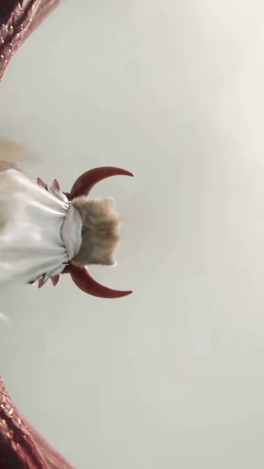
s04_in_12.77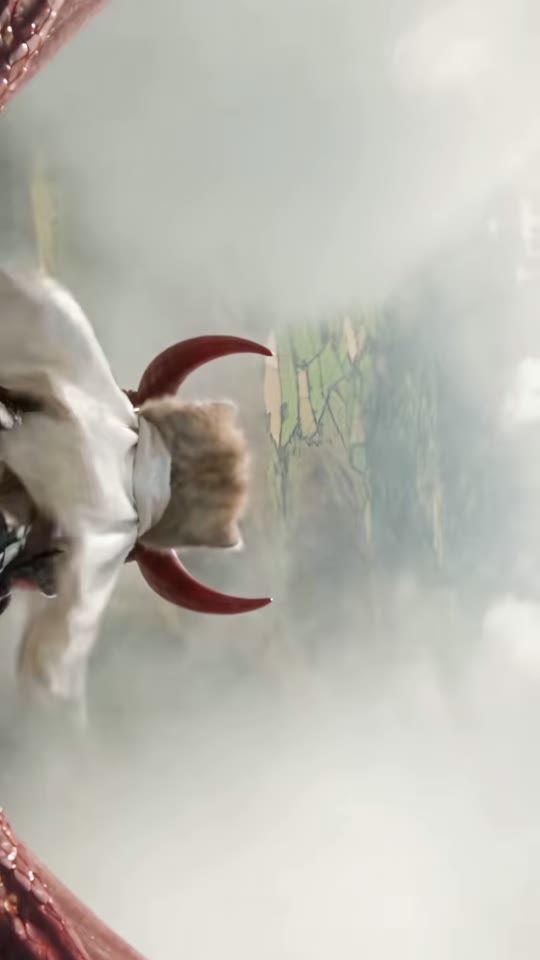
g_13.00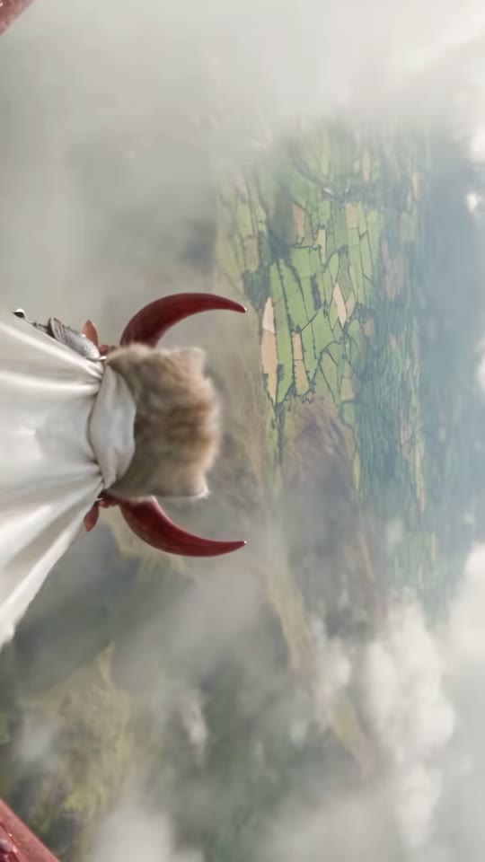
g_14.00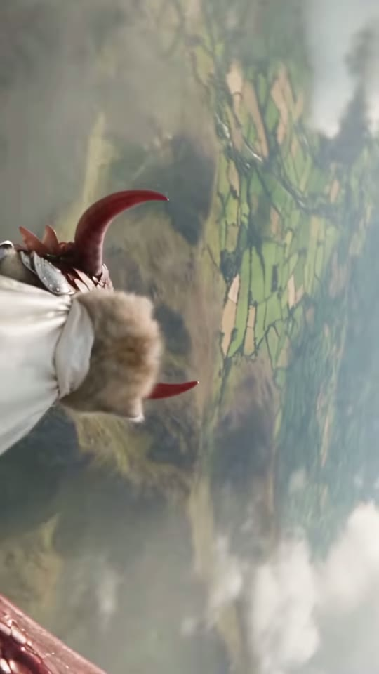
g_15.00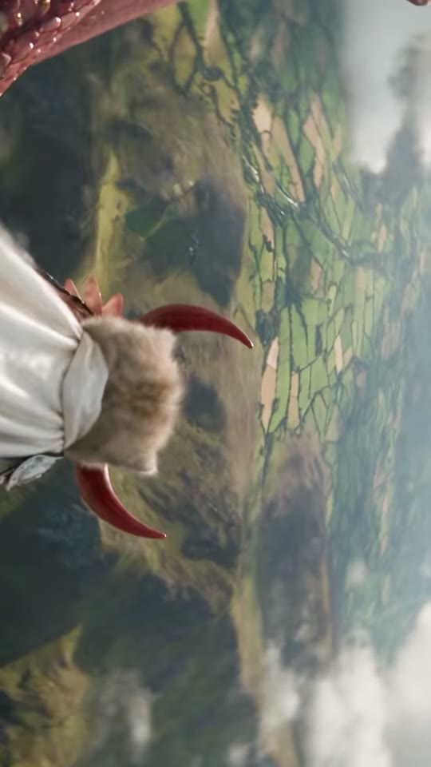
g_16.00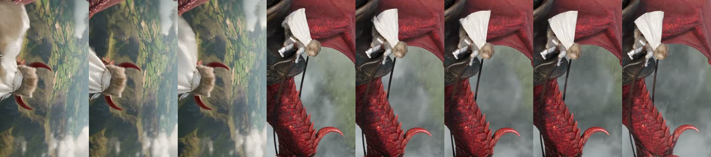
x_16.40| 카메라 움직임 | 라이더 뒤통수 바로 뒤에 붙은 OTS, 용과 함께 이동. 12.7~13.5s 구름 속 → 안개 걷히며 조각보 농지 공개(리빌). 15.3~16.5s 용이 기수를 숙이며 급강하 시작, 지형이 회전하며 빨라짐(모션 증가, 음량 -9dB 피크 15.7s). |
|---|---|
| 화면 구성(구도) | 90도 회전. 최종 세로화면: 고양이 뒤통수 x35% y50%(머리 높이 약 20%), 흰 망토가 왼쪽 가장자리 x0~20%를 덮음, 붉은 뿔이 y38%, y62%에서 오른쪽으로 휘어짐(프레이밍 괄호), 오른쪽 절반은 초록 조각보 농지와 구름, 좌상·좌하 모서리에 용 비늘. 원본 가로: 고양이 뒤통수 하단 중앙 x50% y65%, 뿔이 좌우 x38%/x62%, 농지가 상단 절반. |
| 동물 행동/연기 | 고양이가 뿔 사이로 아래 세상을 내려다봄, 털이 바람에 흩날림. 끝부분에 용이 다이브 시작. |
| 배경 | 구름 아래 펼쳐진 아일랜드/스코틀랜드풍 초록 조각보 농지와 돌담, 이끼 낀 언덕, 흰 구름 조각. |
| 화면 문구/자막 | 없음 |
| 다음 컷 전환 | Hard cut (action cut) — 16.57s 하드컷(픽셀차 60.8). 다이브 시작 모션 도중에 컷 → 다이브 중 측면 클로즈업으로 액션 연결. 자동검출의 0.4s 's05'는 별도 샷이 아니라 다음 샷 시작부(오검출). |
| BGM 상태 | 12.7s 컷에 온셋, 15.3~16.0s 급상승(다이브 휘이잉 빌드업). |
16:9 landscape photorealistic over-the-shoulder shot from directly behind the head of a tiny 7-week-old fluffy kitten with long soft cream-beige fur and faint light-brown tabby stripes on the forehead, round head, small rounded ears, huge round glossy dark blue-grey eyes, small pink nose, white whiskers, a small pink satin bow clipped on its left ear, wearing miniature polished silver full-plate knight armor with engraved floral filigree on the rounded pauldrons and breastplate, chainmail skirt underneath, brown leather belt with brass buckle, a tiny longsword with brass crossguard in a dark leather scabbard on the left hip, an ivory-white linen cape tied at the neck, holding thin dark leather reins in its front paws, riding a colossal crimson-red western dragon with glossy wet-looking pebbled scales, a ridge of pale rose-red dorsal spikes, two forward-curving blood-red horns plus two long swept-back charcoal-black horns, amber-gold slit-pupil eyes, huge bat-like red wings with thin translucent glittering membranes, a dark leather riding harness with silver buckles, a dark leather saddle at the base of the neck and thin dark leather reins running to the snout. The back of the kitten's fluffy head and white cape fill the lower center (50% x, 65% y, head about 20% of frame height); the dragon's two blood-red horns curve up on the left (38% x) and right (62% x) framing the view. Far below: a patchwork of green farm fields, stone walls and mossy hills seen through thin drifting clouds. Red scales in the lower corners. 28mm lens, rider sharp, landscape slightly hazy. photorealistic cinematic live-action fantasy film still, practical-creature realism, real fur strand detail, subtle film grain, soft diffused overcast daylight, muted cool teal-grey sky with crimson dragon as the dominant color, high dynamic range, no text, no watermark. Generate as 16:9 landscape 1920x1080; the editor rotates it 90 degrees clockwise to fill 9:16 (sky ends up on the right side of the phone screen, ground on the left).
Camera locked just behind the kitten rider's head, moving with the dragon. First second: flying through thin cloud, then the cloud clears to reveal patchwork farmland far below. Final second: the dragon tips its head down into a steep dive, the landscape rotates and rushes closer, fur and cape whip in the wind. Keep horns, bow and cape identical. Generate as 16:9 landscape 1920x1080; the editor rotates it 90 degrees clockwise to fill 9:16 (sky ends up on the right side of the phone screen, ground on the left).
cartoon, 3d render look, plastic fur, anthropomorphic human body, standing on two legs like a human, extra limbs, extra tails, deformed paws, human hands, missing bow, bow on wrong ear, gold armor, black armor, blue dragon, green dragon, feathered wings, multiple kittens, multiple dragons, text, subtitles, watermark, logo, frame border, oversaturated, blurry face, warped horns
16:9 5s → 3.87s 사용, transpose=1. 처음 1s의 구름 속 부분이 필요하면 5s 전체 중 0~3.87 사용.
concat; s04 trim=0:3.87, transpose=1
clip s04 12.70-16.57 rotated; cut on action
16:9 landscape over-the-shoulder shot from directly behind the head of a tiny baby golden Syrian hamster with fluffy golden-orange and cream fur, white chest and cheeks, chubby round cheek pouches, tiny rounded pink-edged ears, huge glossy black bead eyes, pink nose, tiny pink paws, a small pink satin bow clipped on its left ear, wearing miniature polished silver full-plate knight armor with engraved floral filigree on the rounded pauldrons and breastplate, chainmail skirt underneath, brown leather belt with brass buckle, a tiny longsword with brass crossguard in a dark leather scabbard on the left hip, an ivory-white linen cape tied at the neck, holding thin dark leather reins in its tiny pink front paws, riding a colossal crimson-red western dragon with glossy wet-looking pebbled scales, a ridge of pale rose-red dorsal spikes, two forward-curving blood-red horns plus two long swept-back charcoal-black horns, amber-gold slit-pupil eyes, huge bat-like red wings with thin translucent glittering membranes, a dark leather riding harness with silver buckles, a dark leather saddle at the base of the neck and thin dark leather reins running to the snout; round golden fuzzy back of head and tiny ears lower center (50% x, 65% y), red horns framing left and right, patchwork green farmland far below through thin clouds. 28mm. photorealistic cinematic live-action fantasy film still, practical-creature realism, real fur strand detail, subtle film grain, soft diffused overcast daylight, muted cool teal-grey sky with crimson dragon as the dominant color, high dynamic range, no text, no watermark. Generate as 16:9 landscape 1920x1080; the editor rotates it 90 degrees clockwise to fill 9:16 (sky ends up on the right side of the phone screen, ground on the left).
Camera locked behind the hamster rider's head; cloud clears to reveal farmland; final second the dragon tips into a steep dive, landscape rotates and rushes closer, fur ripples. Generate as 16:9 landscape 1920x1080; the editor rotates it 90 degrees clockwise to fill 9:16 (sky ends up on the right side of the phone screen, ground on the left).
햄스터 귀는 작아서 뒤통수만으론 정체성이 약함 → 볼주머니 옆선이 살짝 보이게 3/4 뒤 앵글 권장.
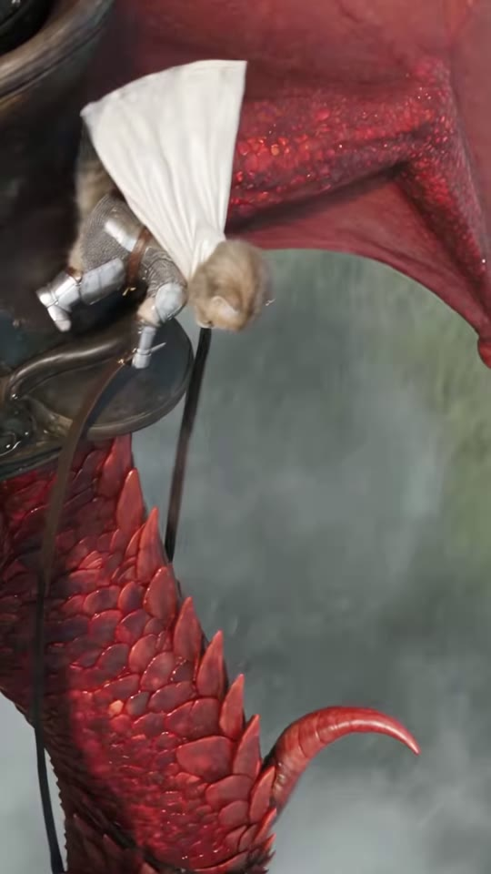
s05_mid_16.77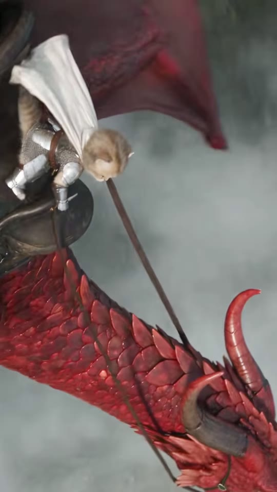
g_17.00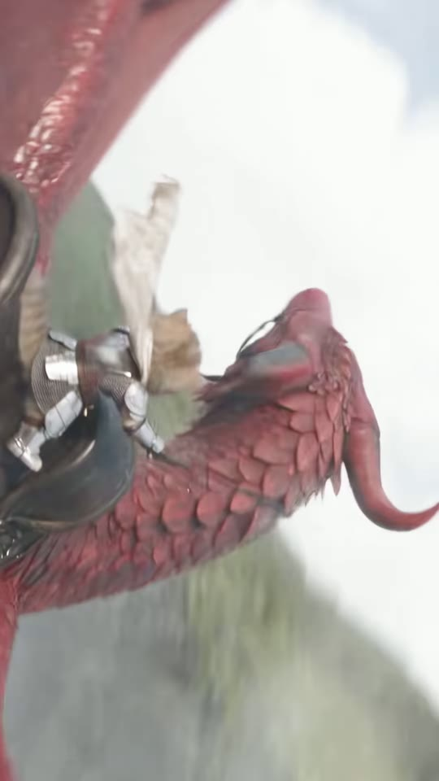
g_18.00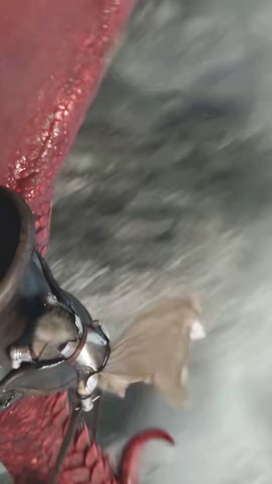
g_19.00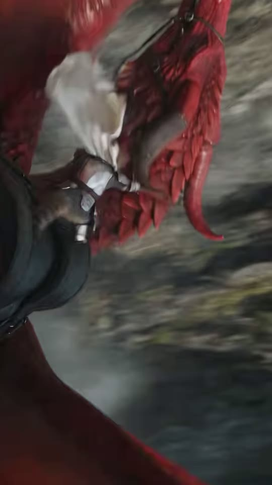
g_20.00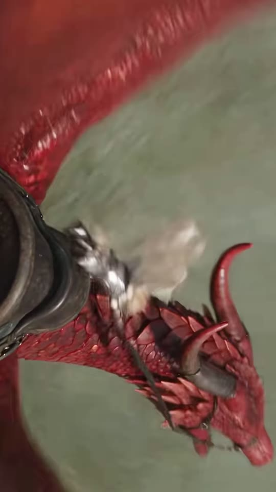
g_21.00| 카메라 움직임 | 측면 근접 팔로우, 16.6~17.5 안정 → 17.5~20.5 용이 배럴롤하며 급강하, 카메라가 함께 회전(롤)·흔들림, 강한 모션블러 → 21s 용 머리 근접(흐름 3.25px/f, 전체 영상 중 가장 격렬). 5.00s = 5s 생성 1개 전체 사용. |
|---|---|
| 화면 구성(구도) | 90도 회전(최종화면 기준 왼쪽에 초록 지면, 오른쪽 하늘). 시작: 안장+고양이 x30% y25%(고양이 높이 약 30%), 용 목이 왼쪽 위에서 오른쪽 아래로 대각 리딩라인, 머리/뿔 x80% y85%, 날개 막이 상단 우측. 끝(21s): 용 머리 클로즈업 x70% y75%, 고양이는 x35% y45%에서 흐림. |
| 동물 행동/연기 | 고양이가 안장에 매달려 고삐를 잡고 앞으로 숙임, 흰 망토가 위로 휘날림. 용이 몸을 비틀어 회전 급강하. 19~20s 고양이가 거의 튕겨나갈 듯 흔들림, 용 머리가 카메라 쪽으로 돌아옴. |
| 배경 | 안개와 흐린 초록 산비탈이 빠르게 스쳐감(모션블러). |
| 화면 문구/자막 | 없음 |
| 다음 컷 전환 | Hard cut — 21.57s 하드컷(픽셀차 45). 급강하 클로즈업 → 지면 충돌 와이드. 컷 직전 2프레임 강한 블러가 '충격' 컷을 매끄럽게. |
| BGM 상태 | 17.1~18.3s -11~-15dB 바람 소음 지속, 다이브 구간 중음량. 20.75s 온셋. |
16:9 landscape photorealistic side close tracking shot during a steep dive. On the left-lower third, a tiny 7-week-old fluffy kitten with long soft cream-beige fur and faint light-brown tabby stripes on the forehead, round head, small rounded ears, huge round glossy dark blue-grey eyes, small pink nose, white whiskers, a small pink satin bow clipped on its left ear, wearing miniature polished silver full-plate knight armor with engraved floral filigree on the rounded pauldrons and breastplate, chainmail skirt underneath, brown leather belt with brass buckle, a tiny longsword with brass crossguard in a dark leather scabbard on the left hip, an ivory-white linen cape tied at the neck, holding thin dark leather reins in its front paws, clings to the dark leather saddle, leaning forward with the white cape whipping upward. The glossy crimson neck of a colossal crimson-red western dragon with glossy wet-looking pebbled scales, a ridge of pale rose-red dorsal spikes, two forward-curving blood-red horns plus two long swept-back charcoal-black horns, amber-gold slit-pupil eyes, huge bat-like red wings with thin translucent glittering membranes, a dark leather riding harness with silver buckles, a dark leather saddle at the base of the neck and thin dark leather reins running to the snout extends to the right with its horned head at the right edge, one red wing membrane filling the top. Blurred misty green hillside rushing past. 35mm, motion blur on background. photorealistic cinematic live-action fantasy film still, practical-creature realism, real fur strand detail, subtle film grain, soft diffused overcast daylight, muted cool teal-grey sky with crimson dragon as the dominant color, high dynamic range, no text, no watermark. Generate as 16:9 landscape 1920x1080; the editor rotates it 90 degrees clockwise to fill 9:16 (sky ends up on the right side of the phone screen, ground on the left).
Close-up of the dragon's horned red head turning toward camera with the kitten rider blurred behind it, strong motion blur, misty hillside background.
High-speed chase camera beside the diving dragon. 0-1s steady; 1-4s the dragon barrel-rolls in a steep spiral dive, the camera rolls with it, heavy motion blur, the kitten clings to the saddle and is shaken hard, cape whipping; 4-5s the dragon's horned head swings toward the camera in close-up. Keep the kitten on the saddle (it must not fall yet), keep armor, bow and dragon design consistent. Generate as 16:9 landscape 1920x1080; the editor rotates it 90 degrees clockwise to fill 9:16 (sky ends up on the right side of the phone screen, ground on the left).
cartoon, 3d render look, plastic fur, anthropomorphic human body, standing on two legs like a human, extra limbs, extra tails, deformed paws, human hands, missing bow, bow on wrong ear, gold armor, black armor, blue dragon, green dragon, feathered wings, multiple kittens, multiple dragons, text, subtitles, watermark, logo, frame border, oversaturated, blurry face, warped horns
16:9 5s 전체 사용, transpose=1. 'first-last frame' 모드로 끝 프레임 지정 권장. 모션 강도 high.
concat; s05 trim=0:5.00, transpose=1
clip s05 16.57-21.57 rotated; optional 2px shake
16:9 landscape side close tracking shot in a steep dive: a tiny baby golden Syrian hamster with fluffy golden-orange and cream fur, white chest and cheeks, chubby round cheek pouches, tiny rounded pink-edged ears, huge glossy black bead eyes, pink nose, tiny pink paws, a small pink satin bow clipped on its left ear, wearing miniature polished silver full-plate knight armor with engraved floral filigree on the rounded pauldrons and breastplate, chainmail skirt underneath, brown leather belt with brass buckle, a tiny longsword with brass crossguard in a dark leather scabbard on the left hip, an ivory-white linen cape tied at the neck, holding thin dark leather reins in its tiny pink front paws, clinging to the saddle on the left-lower third, cheeks flattened by wind, white cape whipping upward; crimson neck of a colossal crimson-red western dragon with glossy wet-looking pebbled scales, a ridge of pale rose-red dorsal spikes, two forward-curving blood-red horns plus two long swept-back charcoal-black horns, amber-gold slit-pupil eyes, huge bat-like red wings with thin translucent glittering membranes, a dark leather riding harness with silver buckles, a dark leather saddle at the base of the neck and thin dark leather reins running to the snout extends right to the horned head; blurred misty green hillside. 35mm. photorealistic cinematic live-action fantasy film still, practical-creature realism, real fur strand detail, subtle film grain, soft diffused overcast daylight, muted cool teal-grey sky with crimson dragon as the dominant color, high dynamic range, no text, no watermark. Generate as 16:9 landscape 1920x1080; the editor rotates it 90 degrees clockwise to fill 9:16 (sky ends up on the right side of the phone screen, ground on the left).
Chase camera beside the diving dragon; barrel-roll spiral dive, camera rolls, heavy motion blur, hamster clings and is shaken, fur and cheeks rippling; last second the dragon head swings toward camera. Generate as 16:9 landscape 1920x1080; the editor rotates it 90 degrees clockwise to fill 9:16 (sky ends up on the right side of the phone screen, ground on the left).
햄스터 볼살이 바람에 눌려 펄럭이는 디테일이 웃음 포인트(고양이 버전보다 코믹).
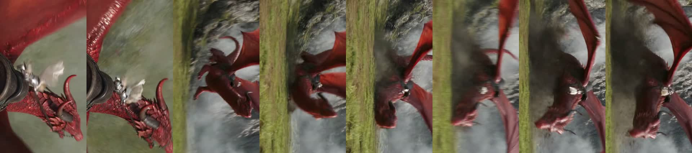
x_21.40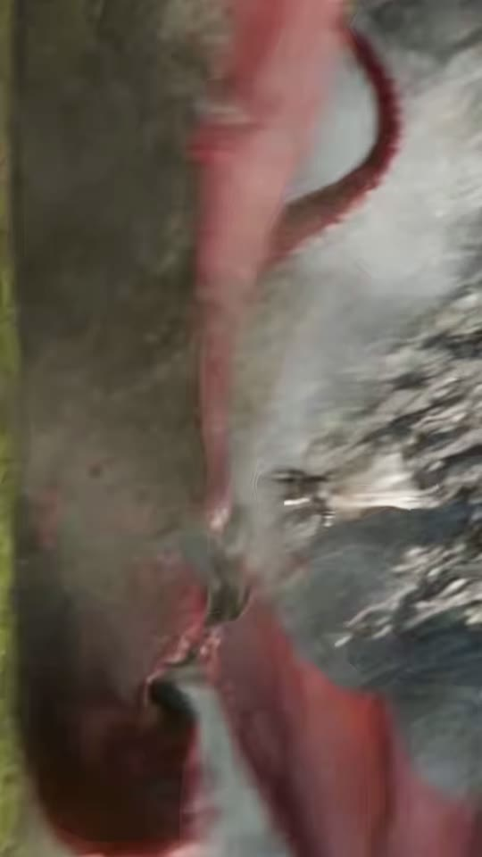
g_22.00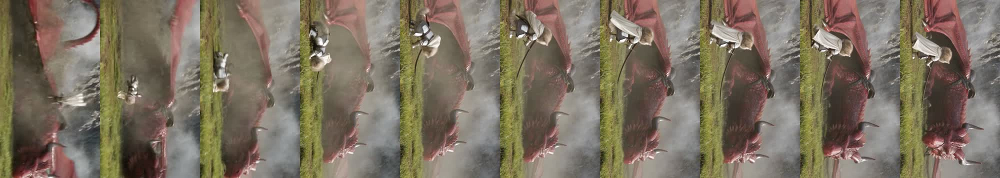
x_22.40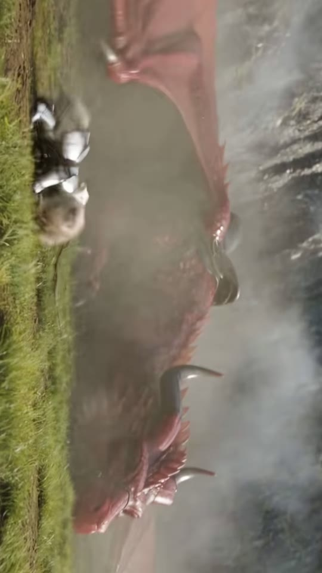
g_23.00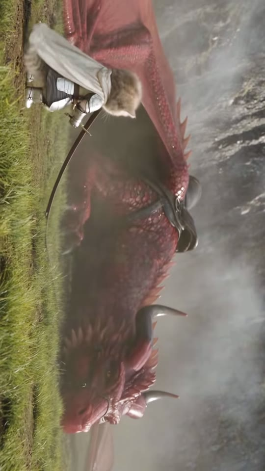
g_24.00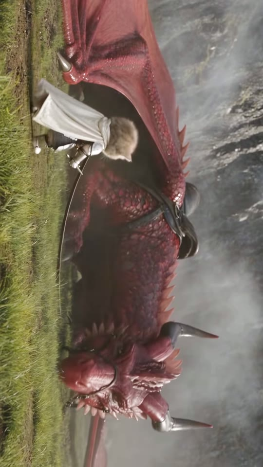
g_25.00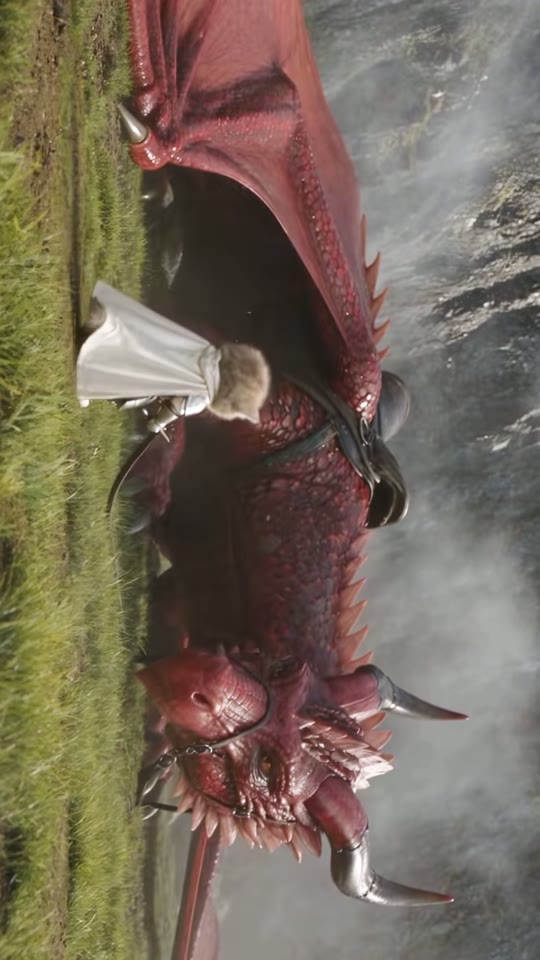
g_26.00| 카메라 움직임 | 21.6~22.9s 충돌 충격 흔들림+블러(픽셀차 20+) → 23s 이후 거의 고정(흐름 0.49px/f), 먼지가 가라앉으며 선명해짐. 5.00s = 5s 생성 전체. |
|---|---|
| 화면 구성(구도) | 90도 회전. 최종 세로화면: 풀밭이 왼쪽 x0~25% 세로 띠, 용 몸통이 중앙 x25~75%에 세로로 누움, 머리+뿔 하단 y70~90%, 날개가 상단 y0~30% 덮음, 오른쪽 x75~100%는 바위 산비탈+먼지 연기. 고양이: 23s에 x20% y35%(풀밭에 굴러떨어짐) → 26s x30% y38%에서 용 머리 쪽을 향해 무릎 꿇음. 원본 가로: 지면이 하단 25%, 용이 오른쪽을 향해 배깔고 누움. |
| 동물 행동/연기 | 21.6s 용이 풀밭에 배로 충돌하며 미끄러짐, 흙먼지 폭발 → 22.4~22.8s 고양이가 안장에서 튕겨 공중으로 → 23.0s 풀밭에 떨어져 구름 → 23.5~25s 일어나 망토를 끌며 용 머리 쪽으로 걸어감 → 26s 용 옆에 멈춰 바라봄. 용은 눈 감고 기절한 듯 움직이지 않음. |
| 배경 | 높은 풀이 자란 초원, 바위투성이 산비탈, 짙은 흙먼지/연기가 오른쪽(원본 위쪽)으로 피어오름. |
| 화면 문구/자막 | 없음 |
| 다음 컷 전환 | Hard cut (punch-in) — 26.57s 하드컷(픽셀차 59). 같은 축에서 와이드 → 미디엄 클로즈업으로 펀치인(축선 유지 컷인). |
| BGM 상태 | 21.3~22.2s -10~-12dB 충돌 피크, 23s 이후 -18~-21dB로 급격히 조용해짐(정적 → 감정 전환). |
16:9 landscape photorealistic low side wide shot at ground level. a colossal crimson-red western dragon with glossy wet-looking pebbled scales, a ridge of pale rose-red dorsal spikes, two forward-curving blood-red horns plus two long swept-back charcoal-black horns, amber-gold slit-pupil eyes, huge bat-like red wings with thin translucent glittering membranes, a dark leather riding harness with silver buckles, a dark leather saddle at the base of the neck and thin dark leather reins running to the snout has just crash-landed belly-first in a tall green grass meadow, lying stretched across the frame facing right, eyes closed, wings half-folded over its back, a huge cloud of brown dust rising behind it against a rocky hillside. The grass meadow fills the bottom 25% of the frame. In the foreground left on the grass, a tiny 7-week-old fluffy kitten with long soft cream-beige fur and faint light-brown tabby stripes on the forehead, round head, small rounded ears, huge round glossy dark blue-grey eyes, small pink nose, white whiskers, a small pink satin bow clipped on its left ear, wearing miniature polished silver full-plate knight armor with engraved floral filigree on the rounded pauldrons and breastplate, chainmail skirt underneath, brown leather belt with brass buckle, a tiny longsword with brass crossguard in a dark leather scabbard on the left hip, an ivory-white linen cape tied at the neck, holding thin dark leather reins in its front paws, stands on all fours looking at the dragon's head. 35mm lens. photorealistic cinematic live-action fantasy film still, practical-creature realism, real fur strand detail, subtle film grain, soft diffused overcast daylight, muted cool teal-grey sky with crimson dragon as the dominant color, high dynamic range, no text, no watermark. Generate as 16:9 landscape 1920x1080; the editor rotates it 90 degrees clockwise to fill 9:16 (sky ends up on the right side of the phone screen, ground on the left).
Same wide composition, dust thinning, dragon lying still with eyes closed, the kitten knight standing on the grass next to the dragon's head looking at it.
0-1.3s: the dragon slams belly-first into the meadow and skids to the right, dirt and dust explode, camera shakes; the kitten is thrown from the saddle, flips once in the air and lands softly rolling on the grass. 1.5-5s: dust settles, the unconscious dragon lies still with eyes closed; the kitten gets up and walks on four paws toward the dragon's head, cape dragging, then stops beside it. Camera settles to nearly static. No injury, no blood; cute and gentle tone. Generate as 16:9 landscape 1920x1080; the editor rotates it 90 degrees clockwise to fill 9:16 (sky ends up on the right side of the phone screen, ground on the left).
cartoon, 3d render look, plastic fur, anthropomorphic human body, standing on two legs like a human, extra limbs, extra tails, deformed paws, human hands, missing bow, bow on wrong ear, gold armor, black armor, blue dragon, green dragon, feathered wings, multiple kittens, multiple dragons, text, subtitles, watermark, logo, frame border, oversaturated, blurry face, warped horns, blood, gore, injury
16:9 5s 전체, transpose=1. first-last frame 모드(끝 프레임: 고양이가 머리 옆에 선 모습)로 동선 고정.
concat; s06 trim=0:5.00, transpose=1
clip s06 21.57-26.57 rotated; add 0.3s shake 21.57-21.9 if gen lacks it
16:9 landscape low side wide shot at ground level: a colossal crimson-red western dragon with glossy wet-looking pebbled scales, a ridge of pale rose-red dorsal spikes, two forward-curving blood-red horns plus two long swept-back charcoal-black horns, amber-gold slit-pupil eyes, huge bat-like red wings with thin translucent glittering membranes, a dark leather riding harness with silver buckles, a dark leather saddle at the base of the neck and thin dark leather reins running to the snout crash-landed belly-first in tall green grass facing right, eyes closed, dust cloud rising against a rocky hillside; grass fills bottom 25%; in the left foreground a tiny baby golden Syrian hamster with fluffy golden-orange and cream fur, white chest and cheeks, chubby round cheek pouches, tiny rounded pink-edged ears, huge glossy black bead eyes, pink nose, tiny pink paws, a small pink satin bow clipped on its left ear, wearing miniature polished silver full-plate knight armor with engraved floral filigree on the rounded pauldrons and breastplate, chainmail skirt underneath, brown leather belt with brass buckle, a tiny longsword with brass crossguard in a dark leather scabbard on the left hip, an ivory-white linen cape tied at the neck, holding thin dark leather reins in its tiny pink front paws, standing on the grass looking at the dragon's head. 35mm. photorealistic cinematic live-action fantasy film still, practical-creature realism, real fur strand detail, subtle film grain, soft diffused overcast daylight, muted cool teal-grey sky with crimson dragon as the dominant color, high dynamic range, no text, no watermark. Generate as 16:9 landscape 1920x1080; the editor rotates it 90 degrees clockwise to fill 9:16 (sky ends up on the right side of the phone screen, ground on the left).
The dragon slams into the meadow and skids, dust explodes; the hamster is tossed from the saddle, tumbles like a little ball and rolls to a stop, then scurries on four paws toward the dragon's head, stops and sniffs. Dust settles, camera settles. Generate as 16:9 landscape 1920x1080; the editor rotates it 90 degrees clockwise to fill 9:16 (sky ends up on the right side of the phone screen, ground on the left).
햄스터는 '데굴데굴 공처럼 구르기'가 고양이보다 훨씬 자연스럽고 귀여움 → 착지 후 구르는 시간을 0.3s 늘려도 좋음.
| 카메라 움직임 | 고정(흐름 0.27px/f), 미세한 브리딩만. |
|---|---|
| 화면 구성(구도) | 90도 회전. 최종 세로화면: 용의 뿔 달린 머리가 중앙~하단 x10~90% y40~90%를 가득(눈 감음, 콧구멍 x25% y55%), 고양이 머리가 x55% y25%에서 용 이마 너머로 내려다봄(높이 약 15%), 흰 망토 x10~40% y5~25%, 풀밭이 왼쪽 가장자리 x0~15%, 오른쪽 상단 흰 하늘/안개. 원본 가로: 용 머리가 오른쪽 60%, 고양이가 왼쪽 x25% y45%. |
| 동물 행동/연기 | 고양이가 기절한 용의 얼굴 위로 몸을 기울여 걱정스럽게 들여다봄. 용은 눈 감고 미동 없음(가끔 콧김). |
| 배경 | 풀밭(초록 잔디 클로즈업), 뒤쪽 안개 낀 흰 하늘, 용 날개/안장 끈 일부. |
| 화면 문구/자막 | 없음 |
| 다음 컷 전환 | Hard cut (punch-in) — 29.20s 하드컷(픽셀차 67). 같은 방향 축으로 익스트림 클로즈업 펀치인. |
| BGM 상태 | 조용한 앰비언트, -19dB 전후. 28.5s부터 2.19s 간격(=110BPM 1마디) 규칙적 온셋 시작 → 부드러운 피아노/벨 코드로 추정. |
16:9 landscape photorealistic medium close-up at ground level. The horned crimson head of a colossal crimson-red western dragon with glossy wet-looking pebbled scales, a ridge of pale rose-red dorsal spikes, two forward-curving blood-red horns plus two long swept-back charcoal-black horns, amber-gold slit-pupil eyes, huge bat-like red wings with thin translucent glittering membranes, a dark leather riding harness with silver buckles, a dark leather saddle at the base of the neck and thin dark leather reins running to the snout rests on the grass, filling the right 60% of the frame, eyes closed, nostrils relaxed, spiky frill. On the left, a tiny 7-week-old fluffy kitten with long soft cream-beige fur and faint light-brown tabby stripes on the forehead, round head, small rounded ears, huge round glossy dark blue-grey eyes, small pink nose, white whiskers, a small pink satin bow clipped on its left ear, wearing miniature polished silver full-plate knight armor with engraved floral filigree on the rounded pauldrons and breastplate, chainmail skirt underneath, brown leather belt with brass buckle, a tiny longsword with brass crossguard in a dark leather scabbard on the left hip, an ivory-white linen cape tied at the neck, holding thin dark leather reins in its front paws, leans over the dragon's brow and peers down at its face with worried big eyes (head about 15% of frame height, at 25% x, 45% y). Green grass at the bottom edge, misty white sky above. 50mm, shallow depth of field. photorealistic cinematic live-action fantasy film still, practical-creature realism, real fur strand detail, subtle film grain, soft diffused overcast daylight, muted cool teal-grey sky with crimson dragon as the dominant color, high dynamic range, no text, no watermark. Generate as 16:9 landscape 1920x1080; the editor rotates it 90 degrees clockwise to fill 9:16 (sky ends up on the right side of the phone screen, ground on the left).
Static camera. The kitten slowly leans closer over the unconscious dragon's face, whiskers twitching, ears slightly back in worry. The dragon remains still with eyes closed, a faint breath from the nostrils. Subtle, quiet moment. Generate as 16:9 landscape 1920x1080; the editor rotates it 90 degrees clockwise to fill 9:16 (sky ends up on the right side of the phone screen, ground on the left).
cartoon, 3d render look, plastic fur, anthropomorphic human body, standing on two legs like a human, extra limbs, extra tails, deformed paws, human hands, missing bow, bow on wrong ear, gold armor, black armor, blue dragon, green dragon, feathered wings, multiple kittens, multiple dragons, text, subtitles, watermark, logo, frame border, oversaturated, blurry face, warped horns
16:9 5s → 2.63s 사용, transpose=1. 모션 강도 low.
concat; s07 trim=0:2.63, transpose=1
clip s07 26.57-29.20 rotated
16:9 landscape medium close-up at ground level: the horned crimson head of a colossal crimson-red western dragon with glossy wet-looking pebbled scales, a ridge of pale rose-red dorsal spikes, two forward-curving blood-red horns plus two long swept-back charcoal-black horns, amber-gold slit-pupil eyes, huge bat-like red wings with thin translucent glittering membranes, a dark leather riding harness with silver buckles, a dark leather saddle at the base of the neck and thin dark leather reins running to the snout resting on grass, filling the right 60%, eyes closed; on the left a tiny baby golden Syrian hamster with fluffy golden-orange and cream fur, white chest and cheeks, chubby round cheek pouches, tiny rounded pink-edged ears, huge glossy black bead eyes, pink nose, tiny pink paws, a small pink satin bow clipped on its left ear, wearing miniature polished silver full-plate knight armor with engraved floral filigree on the rounded pauldrons and breastplate, chainmail skirt underneath, brown leather belt with brass buckle, a tiny longsword with brass crossguard in a dark leather scabbard on the left hip, an ivory-white linen cape tied at the neck, holding thin dark leather reins in its tiny pink front paws, leaning over the dragon's brow peering down with worried glossy black eyes. Grass bottom edge, misty sky. 50mm shallow DOF. photorealistic cinematic live-action fantasy film still, practical-creature realism, real fur strand detail, subtle film grain, soft diffused overcast daylight, muted cool teal-grey sky with crimson dragon as the dominant color, high dynamic range, no text, no watermark. Generate as 16:9 landscape 1920x1080; the editor rotates it 90 degrees clockwise to fill 9:16 (sky ends up on the right side of the phone screen, ground on the left).
Static camera; the hamster leans closer over the unconscious dragon's face, nose and whiskers twitching rapidly; dragon still, faint breath. Generate as 16:9 landscape 1920x1080; the editor rotates it 90 degrees clockwise to fill 9:16 (sky ends up on the right side of the phone screen, ground on the left).
햄스터 특유의 코 씰룩임(빠른 whisker twitch)이 걱정 연기를 대신함.
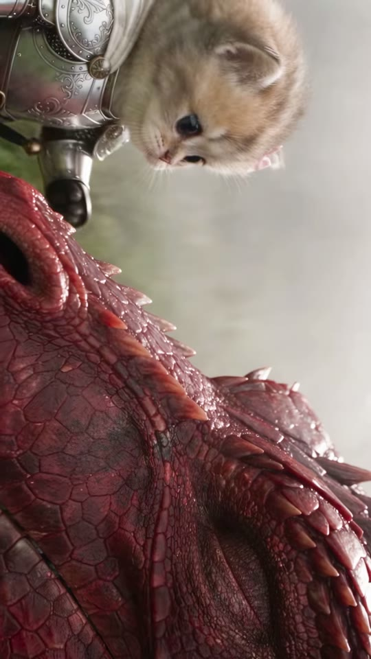
s09_in_29.27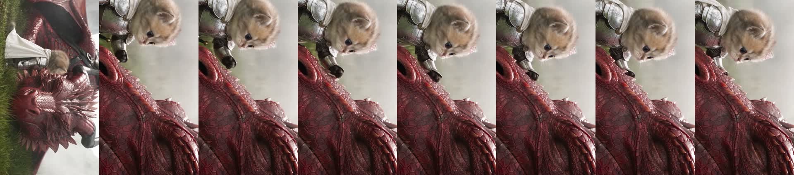
x_29.00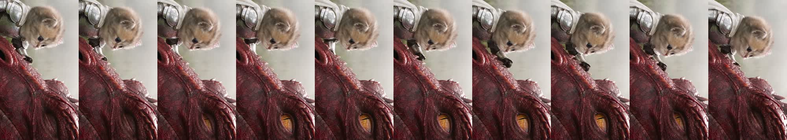
x_30.40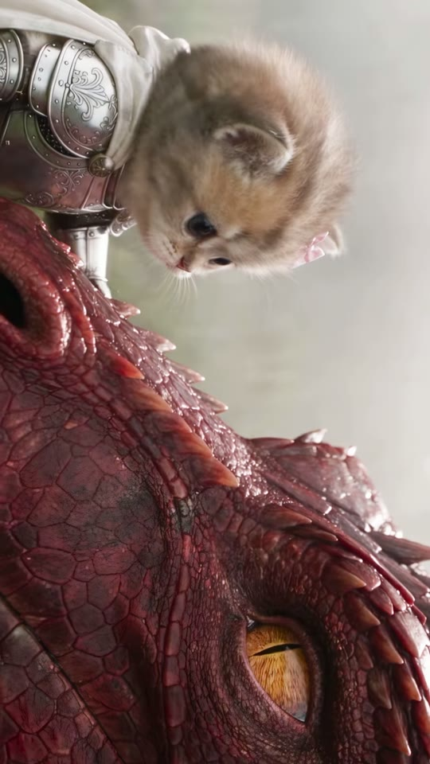
g_31.00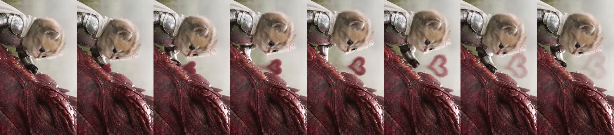
x_33.50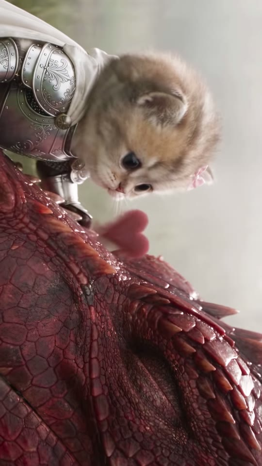
g_34.00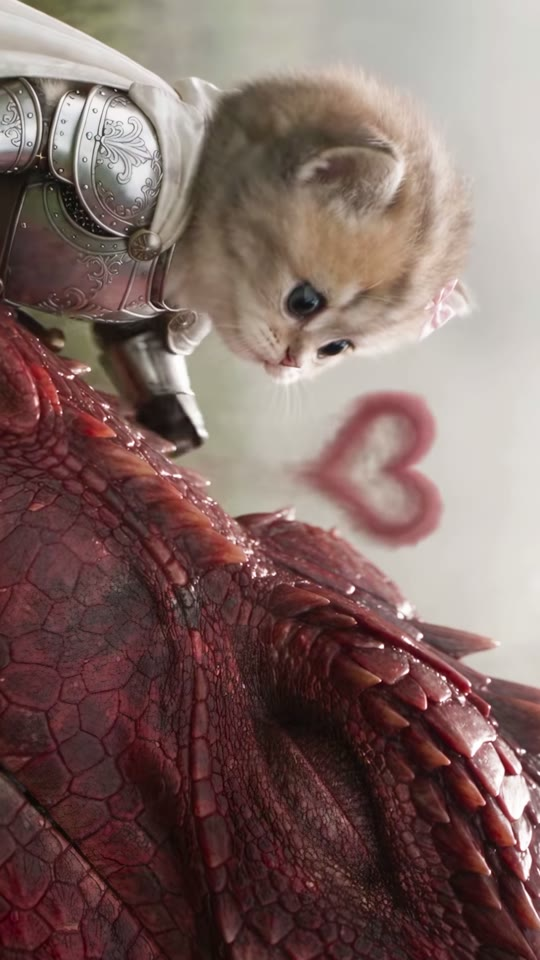
g_35.00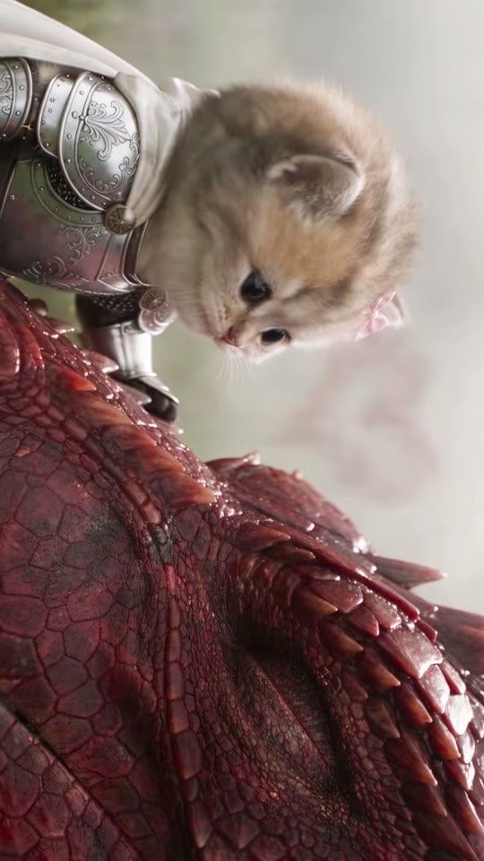
g_36.00| 카메라 움직임 | 고정 + 아주 느린 푸시인(7초 동안 약 3%). 7.37s = 10s 생성 트림(또는 5s+extend)로 추정. |
|---|---|
| 화면 구성(구도) | 90도 회전. 최종 세로화면: 고양이 얼굴 x60% y30%(머리 높이 약 30%), 갑옷 어깨가 좌상단 x0~30% y0~30%, 용 주둥이/얼굴이 하단 60%(y40~100%)를 채움, 콧구멍 왼쪽 가장자리 x0~10% y38%, 호박색 눈 x65% y88%. 오른쪽 상단 흐린 흰 안개 배경. 하트는 x45~75% y45~55%에서 생겨 오른쪽(=원래 위쪽)으로 떠오름. 원본 가로: 고양이 얼굴 왼쪽 x30% y40%, 용 머리 오른쪽 60%, 눈 x88% y35%. |
| 동물 행동/연기 | 29.2~30.8s 고양이가 앞발로 용 주둥이를 톡톡 건드리며 들여다봄 → 30.9s 용의 호박색 세로동공 눈이 번쩍 뜨임(리빌) → 31.2~32.4s 눈을 뜬 채 고양이를 바라봄 → 32.6s 천천히 다시 감음(안심) → 33.9s 용 주둥이에서 붉은 연기 하트가 '퐁' 생겨나 → 34~36.3s 위로 떠오르며 흩어짐. 고양이는 하트를 바라봄. |
| 배경 | 부드럽게 흐린 흰 안개/하늘, 좌상단에 풀 약간. |
| 화면 문구/자막 | 없음 |
| 다음 컷 전환 | End (hold, no loop) — 36.57s 영상 종료. 하트가 사라진 직후 컷(루프 아님). pt.3 시리즈라 다음 편 기대감으로 마무리. |
| BGM 상태 | 잔잔한 감성 파트: 28.5/30.69/32.88/35.07s 2.19s 간격 코드(110BPM 매 마디 다운비트). 음량 -18~-21dB 안정. |
16:9 landscape photorealistic extreme close-up. The left third shows a tiny 7-week-old fluffy kitten with long soft cream-beige fur and faint light-brown tabby stripes on the forehead, round head, small rounded ears, huge round glossy dark blue-grey eyes, small pink nose, white whiskers, a small pink satin bow clipped on its left ear, wearing miniature polished silver full-plate knight armor with engraved floral filigree on the rounded pauldrons and breastplate, chainmail skirt underneath, brown leather belt with brass buckle, a tiny longsword with brass crossguard in a dark leather scabbard on the left hip, an ivory-white linen cape tied at the neck, holding thin dark leather reins in its front paws, face at 30% x, 40% y, leaning down over the snout of a colossal crimson-red western dragon with glossy wet-looking pebbled scales, a ridge of pale rose-red dorsal spikes, two forward-curving blood-red horns plus two long swept-back charcoal-black horns, amber-gold slit-pupil eyes, huge bat-like red wings with thin translucent glittering membranes, a dark leather riding harness with silver buckles, a dark leather saddle at the base of the neck and thin dark leather reins running to the snout, one armored paw resting on the scales. The dragon's crimson scaly snout and closed eye fill the right 60% of the frame, a large nostril at the bottom edge, glossy wet scales with rose-red spikes. Soft misty white background. 85mm macro look, very shallow depth of field, focus on the kitten's eyes. photorealistic cinematic live-action fantasy film still, practical-creature realism, real fur strand detail, subtle film grain, soft diffused overcast daylight, muted cool teal-grey sky with crimson dragon as the dominant color, high dynamic range, no text, no watermark. Generate as 16:9 landscape 1920x1080; the editor rotates it 90 degrees clockwise to fill 9:16 (sky ends up on the right side of the phone screen, ground on the left).
Same extreme close-up, the dragon's eye closed peacefully, a faint dissolving red smoke heart floating above, the kitten gazing tenderly.
Static camera with an extremely slow push-in. 0-1.6s: the kitten gently pats the dragon's snout with its paw and peers closely. 1.7s: the dragon's amber slit-pupil eye snaps open. 2-3.2s: the eye stays open, looking at the kitten; 3.4s: it slowly closes contentedly. 4.7s: a small puff of warm breath from the snout forms a soft red smoky heart shape that rises upward and dissolves by 7s. The kitten watches the heart. Keep scales, bow and armor identical; heart must be soft smoke, not a solid icon. Generate as 16:9 landscape 1920x1080; the editor rotates it 90 degrees clockwise to fill 9:16 (sky ends up on the right side of the phone screen, ground on the left).
cartoon, 3d render look, plastic fur, anthropomorphic human body, standing on two legs like a human, extra limbs, extra tails, deformed paws, human hands, missing bow, bow on wrong ear, gold armor, black armor, blue dragon, green dragon, feathered wings, multiple kittens, multiple dragons, text, subtitles, watermark, logo, frame border, oversaturated, blurry face, warped horns, solid emoji heart, cartoon heart sticker
16:9 10s image2video → 7.37s 사용, transpose=1. 하트가 생성에서 안 나오면 하트 없는 클립 + 연기 하트 알파 영상(0.8s 등장, 2.4s 상승/소멸) 오버레이로 대체(원본도 후반 합성일 가능성 있음, 추정).
s08 trim=0:7.37, transpose=1; optional 0.3s audio fade-out
clip s08 29.20-36.57, end of timeline
16:9 landscape extreme close-up: left third a tiny baby golden Syrian hamster with fluffy golden-orange and cream fur, white chest and cheeks, chubby round cheek pouches, tiny rounded pink-edged ears, huge glossy black bead eyes, pink nose, tiny pink paws, a small pink satin bow clipped on its left ear, wearing miniature polished silver full-plate knight armor with engraved floral filigree on the rounded pauldrons and breastplate, chainmail skirt underneath, brown leather belt with brass buckle, a tiny longsword with brass crossguard in a dark leather scabbard on the left hip, an ivory-white linen cape tied at the neck, holding thin dark leather reins in its tiny pink front paws, face at 30% x 40% y, leaning over the snout of a colossal crimson-red western dragon with glossy wet-looking pebbled scales, a ridge of pale rose-red dorsal spikes, two forward-curving blood-red horns plus two long swept-back charcoal-black horns, amber-gold slit-pupil eyes, huge bat-like red wings with thin translucent glittering membranes, a dark leather riding harness with silver buckles, a dark leather saddle at the base of the neck and thin dark leather reins running to the snout, one tiny pink paw on the scales; the crimson scaly snout and closed eye fill the right 60%. Misty white background, 85mm macro, focus on the hamster's eyes. photorealistic cinematic live-action fantasy film still, practical-creature realism, real fur strand detail, subtle film grain, soft diffused overcast daylight, muted cool teal-grey sky with crimson dragon as the dominant color, high dynamic range, no text, no watermark. Generate as 16:9 landscape 1920x1080; the editor rotates it 90 degrees clockwise to fill 9:16 (sky ends up on the right side of the phone screen, ground on the left).
Static, very slow push-in. The hamster pats the dragon's snout with its tiny paw and sniffs; the dragon's amber eye snaps open at 1.7s, looks at the hamster, closes contentedly at 3.4s; at 4.7s a warm breath puff forms a soft red smoky heart that rises and dissolves by 7s; the hamster watches, cheeks puffing. Generate as 16:9 landscape 1920x1080; the editor rotates it 90 degrees clockwise to fill 9:16 (sky ends up on the right side of the phone screen, ground on the left).
마지막 하트 순간에 햄스터가 볼주머니를 부풀리는 리액션을 추가하면 댓글 유도력↑.
대사 없음. 추정: 시네마틱 앰비언트/오케스트라 패드 + 강한 바람·날갯짓 효과음이 앞 23초를 지배, 충돌 후 23s부터 조용한 감성 피아노/벨 코드(2.19s 간격 = 110BPM 1마디마다)로 전환. 무음 구간 0%, 평균 -18dB, 피크 -8.6dB(15.7s 다이브/21.5s 충돌 부근), 스펙트럼 중심 1.5kHz(바람/노이즈 성분 많음).
Cinematic fantasy score, 110 BPM, 4/4, D minor to D major. Intro: airy low string pad and distant choir hum under strong wind, subtle taiko pulse. Build: soaring French horns and staccato strings as the dragon flies, rising riser into a dive at 15 seconds, big impact hit at 21.5 seconds, then sudden silence. Outro from 28 seconds: tender solo felt piano with soft celesta, one gentle chord every bar, warm and heartfelt, fade out at 36 seconds. No vocals.
| 0.21s | high-altitude wind bed · -14 dB 검색어: wind high altitude loop airplane exterior 생성: Steady strong high-altitude wind rushing past, airy and cold, loopable |
|---|---|
| 2.51s | wind gust + dragon wing flap · -6 dB 검색어: wind gust whoosh large wing flap 생성: A sudden powerful wind gust with a single enormous leathery wing flap |
| 3.25s | small armor rattle + leather creak · -10 dB 검색어: small chainmail rattle leather creak 생성: Tiny metal armor pieces rattling and a leather saddle creaking |
| 4.48s | low dragon growl · -9 dB 검색어: dragon growl low rumble 생성: Deep low rumbling growl of a giant dragon, distant, under wind |
| 6.53s | cut whoosh + heavy wing beat · -6 dB 검색어: whoosh transition wing beat heavy 생성: Fast cinematic whoosh followed by a heavy wing beat thump |
| 7.06s | wing flap thump · -9 dB 검색어: dragon wing flap 생성: Single heavy leathery dragon wing flap |
| 10.9s | massive wing downstroke · -7 dB 검색어: giant wing flap whump 생성: Massive slow wing downstroke, deep whump of displaced air |
| 12.7s | wind rush · -8 dB 검색어: wind rush pass by 생성: Wind rushing past a rider's ears, cloth flapping |
| 15.31s | dive riser whoosh · -4 dB 검색어: riser whoosh dive falling 생성: Rising accelerating whoosh of a steep dive, pitch rising for 1.2 seconds |
| 15.7s | short dragon roar · -6 dB 검색어: dragon roar short 생성: Short fierce dragon roar, cinematic |
| 16.57s | wind blast + armor rattle · -6 dB 검색어: wind blast turbulence 생성: Violent turbulent wind blast with small metal armor rattling |
| 20.75s | strained dragon grunt · -8 dB 검색어: creature grunt strain 생성: Giant creature straining grunt during a spin |
| 21.49s | massive ground impact · -3 dB 검색어: body fall heavy impact earth thud 생성: Huge heavy creature crashing belly-first into soft earth, deep thud with ground rumble |
| 21.7s | dirt skid · -7 dB 검색어: dirt skid slide gravel 생성: Large body skidding through grass and dirt, tearing turf |
| 22.05s | debris falling · -12 dB 검색어: debris dirt falling pebbles 생성: Clods of dirt and pebbles raining down |
| 23.1s | soft landing on grass + tiny mew · -10 dB 검색어: small thump grass kitten mew 생성: Small soft thump on grass followed by a tiny kitten mew |
| 24.06s | tiny armored footsteps · -16 dB 검색어: small metal footsteps grass 생성: Tiny light footsteps on grass with faint metal clinks |
| 30.9s | eye open + low curious rumble · -12 dB 검색어: dragon purr rumble soft 생성: Soft wet eyelid blink and a low gentle curious dragon rumble |
| 33.9s | breath puff + sparkle chime · -10 dB 검색어: soft puff breath magic chime 생성: Soft warm breath puff followed by a delicate magical sparkle chime |
0~23s: 바람/효과음이 BGM보다 3~6dB 위(효과음 주도형), BGM -20dB 베드. 21.5s 충돌은 -3dB 최대, 직후 0.5s 내 BGM 포함 전체를 -20dB대로 덕킹해 '정적' 연출. 28.5s부터 피아노 BGM -16dB로 주도, 효과음 -12dB 이하. 36.2~36.57s 0.35s 페이드아웃. (오디오 전체는 파형 기반 추정, 전사 불가)
기본 교체 동물: baby golden hamster (Syrian), same pink satin bow on left ear, same silver filigree armor and ivory cape · 대안: baby Holland Lop bunny (cream-and-orange, floppy ears, pink bow on left ear) — floppy ears flap beautifully in the dive, baby red panda cub (rusty red and white face mask, fluffy striped tail) — tail streaming in the wind, color harmonizes with the crimson dragon
Character reference turnaround sheet on a plain light-grey background, photorealistic: a tiny baby golden Syrian hamster with fluffy golden-orange and cream fur, white chest and cheeks, chubby round cheek pouches, tiny rounded pink-edged ears, huge glossy black bead eyes, pink nose, tiny pink paws, a small pink satin bow clipped on its left ear, wearing miniature polished silver full-plate knight armor with engraved floral filigree on the rounded pauldrons and breastplate, chainmail skirt underneath, brown leather belt with brass buckle, a tiny longsword with brass crossguard in a dark leather scabbard on the left hip, an ivory-white linen cape tied at the neck, holding thin dark leather reins in its tiny pink front paws. Five views in a row at the same scale: front, 3/4 front, side profile, 3/4 back, back; plus two close-up insets: face with the pink satin bow on the LEFT ear, and the engraved floral pauldron detail. Consistent soft studio lighting, true-to-life fur, labeled nothing, no text. Second sheet: the crimson dragon (a colossal crimson-red western dragon with glossy wet-looking pebbled scales, a ridge of pale rose-red dorsal spikes, two forward-curving blood-red horns plus two long swept-back charcoal-black horns, amber-gold slit-pupil eyes, huge bat-like red wings with thin translucent glittering membranes, a dark leather riding harness with silver buckles, a dark leather saddle at the base of the neck and thin dark leather reins running to the snout) in side, front and top views with the saddle, with the hamster seated for scale (hamster head = 1/3 of dragon eye socket height).
#!/usr/bin/env bash
# v08 kitten-knight x dragon pt.3 reconstruction. Inputs: s01.mp4 (9:16), s02..s08.mp4 (16:9), bgm.mp3, sfx/*.wav
set -euo pipefail
OUT=final_v08.mp4
: > list.txt
# durations per shot (seconds)
D=(6.53 2.80 3.37 3.87 5.00 5.00 2.63 7.37)
V=""
for i in 1 2 3 4 5 6 7 8; do
f=$(printf "s%02d.mp4" $i); d=${D[$((i-1))]}
if [ $i -eq 1 ]; then
ffmpeg -v error -y -i "$f" -t "$d" -vf "scale=1080:1920:force_original_aspect_ratio=increase,crop=1080:1920,fps=24,setsar=1" -an -c:v libx264 -crf 14 -pix_fmt yuv420p "p$i.mp4" < /dev/null
else
# 16:9 landscape rotated 90 degrees clockwise -> sky on the right, ground on the left
ffmpeg -v error -y -i "$f" -t "$d" -vf "scale=1920:1080:force_original_aspect_ratio=increase,crop=1920:1080,transpose=1,fps=24,setsar=1" -an -c:v libx264 -crf 14 -pix_fmt yuv420p "p$i.mp4" < /dev/null
fi
echo "file 'p$i.mp4'" >> list.txt
done
ffmpeg -v error -y -f concat -safe 0 -i list.txt -c copy video_24.mp4 < /dev/null
# optional impact shake 21.57-21.90s if the crash gen lacks it
# grade + grain, then 24->30fps by frame duplication (matches source cadence)
ffmpeg -v error -y -i video_24.mp4 -vf "crop=iw-24:ih-42:12+6*sin(90*t)*between(t,21.57,21.90):21+8*cos(110*t)*between(t,21.57,21.90),scale=1080:1920,eq=saturation=0.95:contrast=0.97,noise=alls=4:allf=t,fps=30" -c:v libx264 -crf 16 -pix_fmt yuv420p video_30.mp4 < /dev/null
# audio: bgm + sfx at exact times (ms delays)
ffmpeg -v error -y -i video_30.mp4 -i bgm.mp3 \
-i sfx/wind_bed.wav -i sfx/gust_wing.wav -i sfx/armor_rattle.wav -i sfx/growl_low.wav -i sfx/whoosh_wing.wav \
-i sfx/wing_flap.wav -i sfx/wing_downstroke.wav -i sfx/wind_rush.wav -i sfx/dive_riser.wav -i sfx/roar_short.wav \
-i sfx/wind_blast.wav -i sfx/grunt.wav -i sfx/impact.wav -i sfx/skid.wav -i sfx/debris.wav -i sfx/land_mew.wav \
-i sfx/footsteps.wav -i sfx/eye_rumble.wav -i sfx/puff_chime.wav \
-filter_complex "\
[1:a]volume=-18dB,atrim=0:36.57[bgm];\
[2:a]adelay=210|210,volume=-14dB,atrim=0:23[a2];\
[3:a]adelay=2510|2510,volume=-6dB[a3];\
[4:a]adelay=3250|3250,volume=-10dB[a4];\
[5:a]adelay=4480|4480,volume=-9dB[a5];\
[6:a]adelay=6530|6530,volume=-6dB[a6];\
[7:a]adelay=7060|7060,volume=-9dB[a7];\
[8:a]adelay=10900|10900,volume=-7dB[a8];\
[9:a]adelay=12700|12700,volume=-8dB[a9];\
[10:a]adelay=15310|15310,volume=-4dB[a10];\
[11:a]adelay=15700|15700,volume=-6dB[a11];\
[12:a]adelay=16570|16570,volume=-6dB[a12];\
[13:a]adelay=20750|20750,volume=-8dB[a13];\
[14:a]adelay=21490|21490,volume=-3dB[a14];\
[15:a]adelay=21700|21700,volume=-7dB[a15];\
[16:a]adelay=22050|22050,volume=-12dB[a16];\
[17:a]adelay=23100|23100,volume=-10dB[a17];\
[18:a]adelay=24060|24060,volume=-16dB[a18];\
[19:a]adelay=30900|30900,volume=-12dB[a19];\
[20:a]adelay=33900|33900,volume=-10dB[a20];\
[bgm][a2][a3][a4][a5][a6][a7][a8][a9][a10][a11][a12][a13][a14][a15][a16][a17][a18][a19][a20]amix=inputs=20:normalize=0,alimiter=limit=0.9,afade=t=out:st=36.22:d=0.35,atrim=0:36.57[aout]" \
-map 0:v -map "[aout]" -c:v copy -c:a aac -b:a 192k -shortest "$OUT" < /dev/null
rm -f p?.mp4 list.txt video_24.mp4 video_30.mp4
echo "done -> $OUT"
Use the HyperFrames skill to build a 1080x1920, 30fps, 36.57-second vertical short that exactly reproduces this edit. Author the timeline at 24fps and render at 30fps. Assets: s01.mp4 (9:16 portrait), s02.mp4-s08.mp4 (16:9 landscape 1920x1080), bgm.mp3, sfx/*.wav. IMPORTANT orientation rule: s01 plays upright; every clip s02-s08 must be placed in a 1920x1080 box rotated 90 degrees clockwise (transform: rotate(90deg), centered) so it exactly fills the 1080x1920 stage with the sky on the right and ground on the left. All transitions are hard cuts, no fades. Timeline: s01 0.00-6.53 (source 0-6.53, rider cam, kitten looks into lens); s02 6.53-9.33 (source 0-2.80, rotated, side view of dragon neck); s03 9.33-12.70 (source 0-3.37, rotated, chase cam, wings fill frame height); s04 12.70-16.57 (source 0-3.87, rotated, over-the-shoulder POV above farmland, dive starts); s05 16.57-21.57 (source 0-5.00, rotated, barrel-roll dive); s06 21.57-26.57 (source 0-5.00, rotated, crash landing; add a 0.33s camera shake 21.57-21.90 with 6-8px amplitude); s07 26.57-29.20 (source 0-2.63, rotated, kitten peers at unconscious dragon); s08 29.20-36.57 (source 0-7.37, rotated, eye opens at 30.9, smoky red heart puffs at 33.9 and rises until 36.3). If s08 has no heart, add an overlay: a soft red smoke heart PNG/alpha video, 220px wide, appearing at 33.90 at stage position x=58%, y=50%, scale 0.6 to 1.0 over 0.4s, drifting +180px to the RIGHT (which is 'up' in the rotated world) until 36.30 while fading from 0.9 to 0 opacity, 6px blur. Global grade: saturation 0.95, contrast 0.97, subtle film grain. No text, no captions, no watermark. Audio: bgm.mp3 at -18dB full length (cinematic wind-and-strings first 23s, gentle piano from 28.5s with chords at 28.50, 30.69, 32.88, 35.07). SFX cues (time, file, gain): 0.21 wind_bed -14dB (until 23.0); 2.51 gust_wing -6; 3.25 armor_rattle -10; 4.48 growl_low -9; 6.53 whoosh_wing -6; 7.06 wing_flap -9; 10.90 wing_downstroke -7; 12.70 wind_rush -8; 15.31 dive_riser -4; 15.70 roar_short -6; 16.57 wind_blast -6; 20.75 grunt -8; 21.49 impact -3; 21.70 skid -7; 22.05 debris -12; 23.10 land_mew -10; 24.06 footsteps -16; 30.90 eye_rumble -12; 33.90 puff_chime -10. Duck everything to about -20dB within 0.5s after the 21.49 impact to create a sudden quiet. Fade audio out over the last 0.35s. Validate with hyperframes check, preview, then render final_v08.mp4.
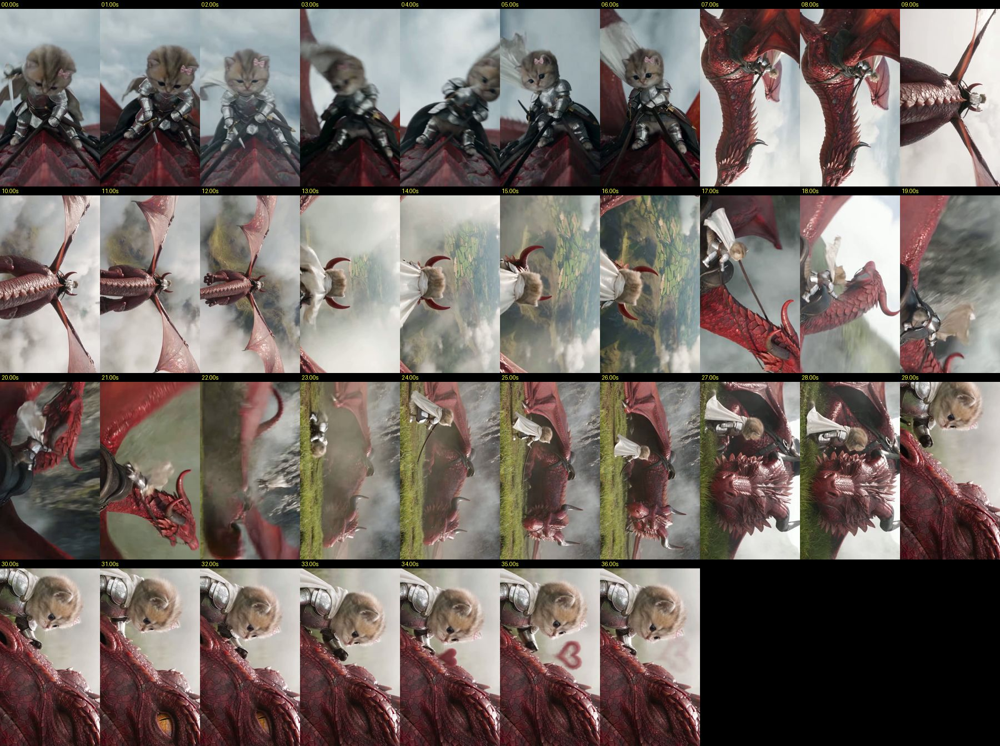